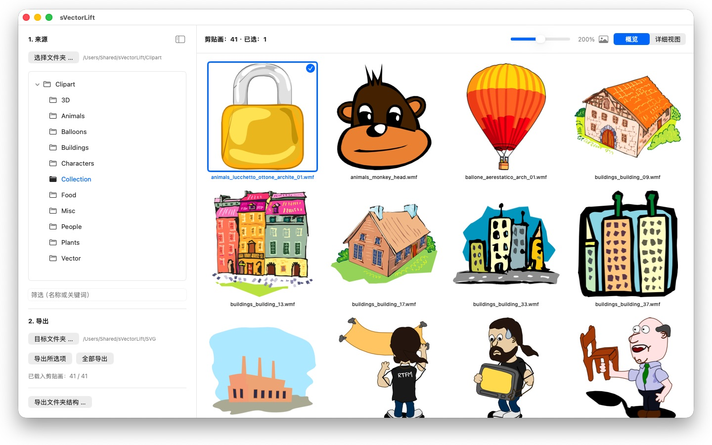
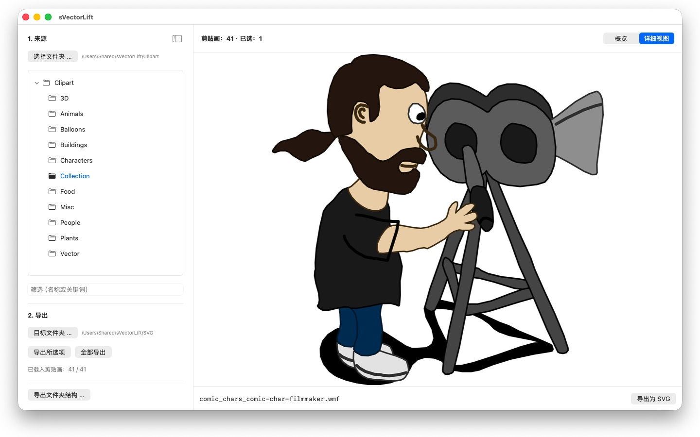

那些旧 CorelDRAW 光盘上的成千上万张剪贴画，被锁在再也没人打开的文件格式里。sVectorLift 把它们变成今天就能用的图形。


书架上的某个角落，放着一张多年前买下的剪贴画光盘。文件都还在，可 Mac 上没有一个程序打得开。
sVectorLift 让这些图重新派上用场。它把每一幅图重新构建为真正的 SVG：任意尺寸都清晰、可编辑，可以直接用在 Illustrator、Affinity、Inkscape、Sketch、Figma 里，或者放到你的网站上。不只是又能看见，而是又能使用。这就是名字里“lift”的意思：把旧的矢量图，提到你今天所用工具的水准上。
它能打开什么
- CorelDRAW 文档（.cdr），第 6 版至第 9 版
- Corel Binary Meta File（.cmx）——包括其他工具拒绝读取的旧式 CDRX
- Windows Metafile（.wmf）
- Computer Graphics Metafile（.cgm）
- QuickDraw 3D Metafile（.3dm、.3dmf），渲染为图像
- Scalable Vector Graphics（.svg），直接显示
许多扩展名为 .cdr 的文件其实并不是 CorelDRAW 文档，而是 CMX——常见的转换器正是栽在这里。sVectorLift 两者都读。
sVectorLift 是为剪贴画收藏而做的：图样、符号、插图。它不是排版软件，也无意重现多页手册或印刷稿。
真正的矢量转换
这里不是把预览缩略图翻拍一遍。sVectorLift 读的是图本身：路径与贝塞尔曲线、填充色、渐变、轮廓与虚线样式、图案与纹理填充、内嵌照片以及文本对象。出来的是真正的矢量数据，可以缩放、改色、编辑，而不是一张图的照片。
纯位图则导出为 PNG，这样什么都不会丢。
浏览你的收藏
- 覆盖整个收藏的文件夹树，含子文件夹
- 清晰矢量缩略图的网格，大小可用滑块无级调节
- 详细视图——用方向键在文件夹里翻看
- 按名称或关键词筛选
- 与“照片”一样的多选：点按、⌘-点按、⇧-点按、框选、⌘A
- 从访达直接打开单个文件（“打开方式”或连按两下）
- 最近使用的文件夹会记住你停下的位置：子文件夹和选中的文件
- 一步导出所选项目或整个文件夹
- 一次转换整个文件夹结构（含子文件夹）——目标文件夹中保留原有结构
- 重命名、在访达中显示、移到废纸篓
对你的 Mac 又快又体贴
缩略图只为你正在看的内容计算，在后台进行并带缓存。大文件夹立刻打开，而不是先卡上几分钟去处理成千上万个文件。
24 种语言：简体中文、繁体中文、英语、德语、法语、意大利语、西班牙语、葡萄牙语（巴西和葡萄牙）、荷兰语、瑞典语、挪威语、芬兰语、捷克语、波兰语、匈牙利语、罗马尼亚语、克罗地亚语、俄语、乌克兰语、土耳其语、波斯语、泰语、日语、韩语。
一切都留在你的 Mac 上。没有网络连接，没有账户，不收集数据。
CorelDRAW 是 Corel Corporation 的商标。sVectorLift 是独立应用，与 Corel 无从属关系，也未获其背书。
- 需要 macOS 14 或更高版本
- 支持 24 种语言
- 技术支持： SwiftAppsBavaria@gmx.net
更多 App
sName2Date Lite
每次处理一个文件的版本：把文件名中的日期作为拍摄日期写入照片、视频或录音，手动设置日期，把名称改为 ISO 格式，并可用 ⌘Z 撤销全部操作——功能与 sName2Date 相同，只是不能处理整个文件夹。
sCollectPlay Lite
sCollectPlay 的精简版：直接打开文件夹、iTunes XML 或 sCollect 媒体库，播放其中的音乐、电影、有声书和播客——支持播放列表、音轨和字幕轨道、慢动作播放和逐帧步进。每次会话只能使用一个来源；分栏浏览器、自定义播放列表和最近使用的来源仅限完整版。
sBikeBridge
分析骑行记录，无需上传到任何平台：读取任何以此格式记录的码表所生成的 FIT 文件，以及 GPX 和 TCX。骑行记录保存在 Mac 上的独立资料库中——包含地图、功率和心率、照片和备注；导入时会识别重复项。按年或按月的统计数据，以及按距离、爬升高度和时长的筛选，让骑行记录便于比较。地图也可按需离线使用。